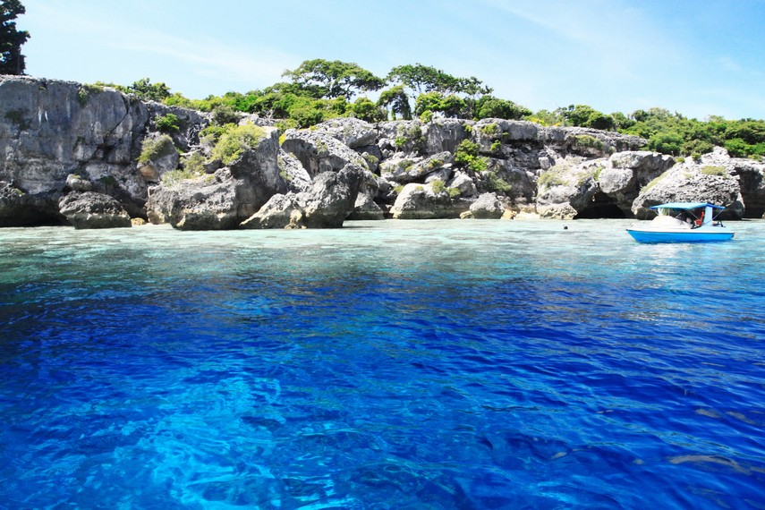
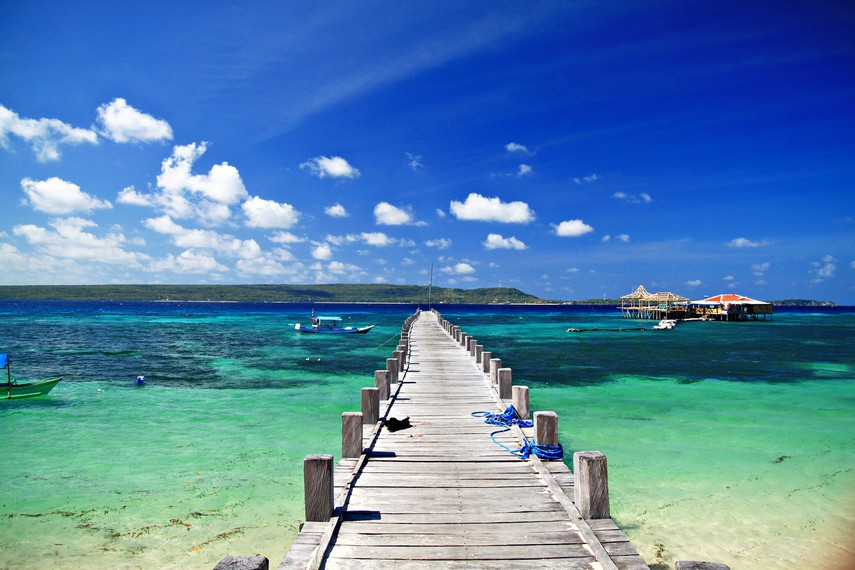

PULAU KAMBING
Pulau Kambing Bulukumba menawarkan taman laut yang masih terjanga dengan warna-warni terumbu karang dan berbagai spesies ikan ...
baca selengkapnya

Pantai Pulau Liukang Loe
Pantai Liukang Loe adalah sebuah pulau kecil yang terletak tidak jauh dari daratan Sulawesi dan terletak persis di depan Pantai Bira Kabupaten Bulukumba ...
baca selengkapnya